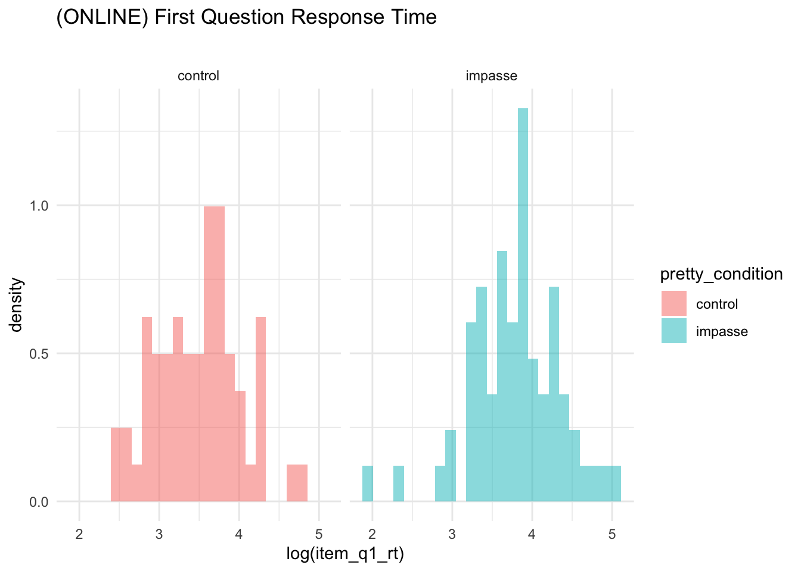

#IMPORT DATA df_items<-read_rds('analysis/SGC3A/data/2-scored-data/sgc3a_scored_items.rds')df_subjects<-read_rds('analysis/SGC3A/data/2-scored-data/sgc3a_scored_participants.rds')#SEPARATE ITEM DATA BY QUESTION TYPEdf_scaffold<-df_items%>%filter(q<6)df_test<-df_items%>%filter(q>6)%>%filter(q%nin%c(6,9))df_nondiscrim<-df_items%>%filter(q%in%c(6,9))
Exploratory Questions
Consistency | How consistent are learners in their interpretation of the graph? Do they adopt an interpretation on the first question and hold constant? Or do they change interpretations from question to question? Are there any interpretations that serve as ‘absorbing states’ (i.e. once encountered, the learner does not exist this state).
Time Course of Exploration | What is the relationship between response accuracy (and interpretation) and time spent on each item?
Can exploration strategies be derived from mouse cursor activity?
does response time predict interpretation vs. non interpretation?
TODO: - does impasse yield different exploration behavior? (characterize mouse) - does impasse yield more time on task? (characterize response time ? number of answers then de-selected?)
TODO: Think about characterizing how variable the interpretations are across a participant. Do they form an interpretation and hold it constant? Or do they change question to question.
#evaluate model using kfold CV# https://www.statology.org/k-fold-cross-validation-in-r/# #specify the cross-validation method# ctrl <- trainControl(method = "cv", number = 5)# #fit a regression model and use k-fold CV to evaluate performance# mk <- train( accuracy ~ condition, data = df, method = "glm", trControl = ctrl, family = "binomial")# print(mk)#
Mass Movement
“movement of mass” from one mode to another
Considering only families of unimodal distributions, the most probably distribution (as predicted by package performance) is negative-binomial.
Warning in multimode::modetest(df$s_NABS): A modification of the data was made
in order to compute the excess mass or the dip statistic
Ameijeiras-Alonso et al. (2019) excess mass test
data: df$s_NABS
Excess mass = 0.09, p-value <2e-16
alternative hypothesis: true number of modes is greater than 1
Warning in multimode::locmodes(df$s_NABS, mod0 = n_modes, display = TRUE): If
the density function has an unbounded support, artificial modes may have been
created in the tails
Estimated location
Modes: 0.136 12.6
Antimode: 7.63
Estimated value of the density
Modes: 0.268 0.0432
Antimode: 0.00648
Critical bandwidth: 1.05
Warning in multimode::modetest(df$s_NABS): A modification of the data was made
in order to compute the excess mass or the dip statistic
Ameijeiras-Alonso et al. (2019) excess mass test
data: df$s_NABS
Excess mass = 0.1, p-value <2e-16
alternative hypothesis: true number of modes is greater than 1
Warning in multimode::locmodes(df$s_NABS, mod0 = n_modes, display = TRUE): If
the density function has an unbounded support, artificial modes may have been
created in the tails
Estimated location
Modes: 0.456 12
Antimode: 4.89
Estimated value of the density
Modes: 0.148 0.0703
Antimode: 0.025
Critical bandwidth: 1.27
RESPONSE LATENCY
TODO: Investigate super high and super low response times..
TODO: Investigate appropriate models for response time data. (see: https://lindeloev.github.io/shiny-rt/).
Especially see https://lindeloev.github.io/shiny-rt/ for ideas on modelling reaction time data
Research Question
Hypothesis
Analysis Strategy
Alternatives
Inference
Q1 Response Latency
Linear Regression (Log Transform)
(In Person)
Visualization
CODE
df_lab<-df_subjects%>%filter(mode=="lab-synch")#HISTOGRAMstats=df_lab%>%group_by(pretty_condition)%>%dplyr::summarise(mean =mean(item_q1_rt))gf_dhistogram(~log(item_q1_rt), fill =~pretty_condition, data =df_lab)%>%gf_facet_grid(~pretty_condition)+# gf_vline(data = stats, xintercept = ~mean, color = "red") +labs(title ="(LAB) First Question Response Time",,
# x = "Response Time (seconds)",# y = "proportion of participants",
subtitle ="")+theme_minimal()
Model
CODE
#SCORE predicted by CONDITIONlab.q1t.lm1<-lm(log(item_q1_rt)~pretty_condition, data =df_lab)paste("Model")
Formula contains log- or sqrt-terms. See help("standardize") for how such terms are standardized.
Warning: 'data_findcols()' is deprecated and will be removed in a future update.
Its usage is discouraged. Please use 'data_find()' instead.
Formula contains log- or sqrt-terms. See help("standardize") for how such terms are standardized.
Warning: 'data_findcols()' is deprecated and will be removed in a future update.
Its usage is discouraged. Please use 'data_find()' instead.
Warning: 'data_findcols()' is deprecated and will be removed in a future update.
Its usage is discouraged. Please use 'data_find()' instead.
We fitted a linear model (estimated using OLS) to predict item_q1_rt with pretty_condition (formula: log(item_q1_rt) ~ pretty_condition). The model explains a statistically significant and weak proportion of variance (R2 = 0.08, F(1, 124) = 10.61, p = 0.001, adj. R2 = 0.07). The model's intercept, corresponding to pretty_condition = control, is at 3.48 (95% CI [3.35, 3.62], t(124) = 50.69, p < .001). Within this model:
- The effect of pretty condition [impasse] is statistically significant and positive (beta = 0.31, 95% CI [0.12, 0.51], t(124) = 3.26, p = 0.001; Std. beta = 0.21, 95% CI [0.09, 0.34])
Standardized parameters were obtained by fitting the model on a standardized version of the dataset. 95% Confidence Intervals (CIs) and p-values were computed using the Wald approximation.
CODE
#print model equationeq<-extract_eq(lab.q1t.lm1, use_coefs =TRUE)
CODE
# #| label: VISMODEL-Q1-LATENCY-LAB# # #MODEL ESTIMATES WITH UNCERTAINTY# # #setup references # #lab.q1t.lm1 <- lm(log(item_q1_rt) ~ condition, data = df_lab)# m <- lab.q1t.lm1# df <- df_lab # call <- m$call %>% as.character()# # # uncertainty model visualization# df <- df %>%# data_grid(pretty_condition) %>%# augment(m, newdata = ., se_fit = TRUE) # # #transform log# df$.fitted <- exp(df$.fitted)# df$.se.fit <- exp(df$.se.fit)# # df %>% # ggplot(aes(y = pretty_condition, color = pretty_condition)) +# stat_halfeye( scale = .5,# aes(# xdist = dist_student_t(df = df.residual(m), mu = .fitted, sigma = .se.fit),# fill = stat(cut_cdf_qi(cdf, # .width = c(.90, .95),# labels = scales::percent_format())))) +# scale_fill_brewer(direction = -1) + # labs (title = "(LAB) Q1 Response Latency ~ Condition", # x = "model predicted mean (seconds)", y = "Condition", fill = "Interval",# subtitle = paste("lm(",call[2],")"),# caption = "note: model log(predictions) have exponentiated to original scale") + theme(legend.position = "blank")
OLS Linear Regression on Q1 response time shows that condition explains a small but statistically significant amount of variance (impasse > control). However, the model violates the assumption of normally distributed residuals.
(Online Replication)
Visualization
CODE
df_online<-df_subjects%>%filter(mode=="asynch")#HISTOGRAMstats=df_online%>%group_by(pretty_condition)%>%dplyr::summarise(mean =mean(item_q1_rt))gf_dhistogram(~log(item_q1_rt), fill =~pretty_condition, data =df_lab)%>%gf_facet_grid(~pretty_condition)+# gf_vline(data = stats, xintercept = ~mean, color = "red") +labs(title ="(ONLINE) First Question Response Time",
# x = "Response Time (seconds)",# y = "proportion of participants",
subtitle ="")+theme_minimal()

Model
CODE
#SCORE predicted by CONDITIONrep.q1t.lm1<-lm(log(item_q1_rt)~pretty_condition, data =df_online)paste("Model")
Formula contains log- or sqrt-terms. See help("standardize") for how such terms are standardized.
Warning: 'data_findcols()' is deprecated and will be removed in a future update.
Its usage is discouraged. Please use 'data_find()' instead.
Formula contains log- or sqrt-terms. See help("standardize") for how such terms are standardized.
Warning: 'data_findcols()' is deprecated and will be removed in a future update.
Its usage is discouraged. Please use 'data_find()' instead.
Warning: 'data_findcols()' is deprecated and will be removed in a future update.
Its usage is discouraged. Please use 'data_find()' instead.
We fitted a linear model (estimated using OLS) to predict item_q1_rt with pretty_condition (formula: log(item_q1_rt) ~ pretty_condition). The model explains a statistically significant and weak proportion of variance (R2 = 0.08, F(1, 202) = 17.39, p < .001, adj. R2 = 0.07). The model's intercept, corresponding to pretty_condition = control, is at 3.25 (95% CI [3.11, 3.39], t(202) = 44.36, p < .001). Within this model:
- The effect of pretty condition [impasse] is statistically significant and positive (beta = 0.42, 95% CI [0.22, 0.62], t(202) = 4.17, p < .001; Std. beta = 0.21, 95% CI [0.11, 0.31])
Standardized parameters were obtained by fitting the model on a standardized version of the dataset. 95% Confidence Intervals (CIs) and p-values were computed using the Wald approximation.
CODE
#print model equationeq<-extract_eq(rep.q1t.lm1, use_coefs =TRUE)
CODE
#MODEL ESTIMATES WITH UNCERTAINTY# # #setup references # # rep.q1t.lm1 <- lm(log(item_q1_rt) ~ condition, data = df_online)# m <- rep.q1t.lm1# df <- df_online # call <- m$call %>% as.character()# # # uncertainty model visualization# df <- df %>%# data_grid(pretty_condition) %>%# augment(m, newdata = ., se_fit = TRUE) # # #transform log# df$.fitted <- exp(df$.fitted)# df$.se.fit <- exp(df$.se.fit)# # df %>% # ggplot(aes(y = pretty_condition, color = pretty_condition)) +# stat_halfeye( scale = .5,# aes(# xdist = dist_student_t(df = df.residual(m), mu = .fitted, sigma = .se.fit),# fill = stat(cut_cdf_qi(cdf, # .width = c(.90, .95),# labels = scales::percent_format())))) +# scale_fill_brewer(direction = -1) + # labs (title = "(ONLINE) Q1 Response Latency ~ Condition", # x = "model predicted mean (seconds)", y = "Condition", fill = "Interval",# subtitle = paste("lm(",call[2],")"),# caption = "note: model log(predictions) have exponentiated to original scale") + theme(legend.position = "blank")
OLS Linear Regression on Q1 response time shows that condition explains a small but statistically significant amount of variance (impasse > control). However, the model violates the assumption of normally distributed residuals.
TODO RESPONSE CONSISTENCY
Source Code
---subtitle: 'Study SGC3A | 5 Exploratory Analyses'---\newpage# Exploratory Analyses {#sec-SGC3A-exploration}**TODO**\- response consistency - clarify core questions being asked\- review models already created in ARCHIVE?\- explore response consistency - fix references- what predicts consistency?*The purpose of this notebook is exploratory analyses of data collected for study SGC3A.*+------------------------+| Pre-Requisite |+========================+| 1_sgc3A_harmonize.qmd\ || 2_sgc3A_scoring.qmd |+------------------------+```{r}#| label: SETUP#| warning : false#| message : falselibrary(multimode) #mode mass testslibrary(Hmisc) # %nin% operatorlibrary(ggpubr) #arrange plotslibrary(ggformula) #easy graphslibrary(report) #easystats reportinglibrary(see) #easystats visualizationlibrary(performance) #easystats model diagnosticslibrary(gmodels) #contingency table and CHISQRlibrary(vcd) #mosaic plotslibrary(vcdExtra) #mosaic plotslibrary(kableExtra) #printing tables library(tidyverse) #ALL THE THINGSlibrary(equatiomatic) #equation printing#OUTPUT OPTIONSlibrary(dplyr, warn.conflicts =FALSE)options(dplyr.summarise.inform =FALSE)options(ggplot2.summarise.inform =FALSE)options(scipen=1, digits=3)``````{r}#| label: IMPORT-DATA#| warning : false#| message : false#IMPORT DATA df_items <-read_rds('analysis/SGC3A/data/2-scored-data/sgc3a_scored_items.rds')df_subjects <-read_rds('analysis/SGC3A/data/2-scored-data/sgc3a_scored_participants.rds')#SEPARATE ITEM DATA BY QUESTION TYPEdf_scaffold <- df_items %>%filter(q <6)df_test <- df_items %>%filter(q >6) %>%filter (q %nin%c(6,9))df_nondiscrim <- df_items %>%filter (q %in%c(6,9))```Exploratory QuestionsConsistency \| How consistent are learners in their interpretation of the graph? Do they adopt an interpretation on the first question and hold constant? Or do they change interpretations from question to question? Are there any interpretations that serve as 'absorbing states' (i.e. once encountered, the learner does not exist this state).Time Course of Exploration \| What is the relationship between response accuracy (and interpretation) and time spent on each item?Can exploration strategies be derived from mouse cursor activity?- does response time predict interpretation vs. non interpretation?TODO: - does impasse yield different exploration behavior? (characterize mouse) - does impasse yield more time on task? (characterize response time ? number of answers then de-selected?)TODO: Think about characterizing how variable the interpretations are across a participant. Do they form an interpretation and hold it constant? Or do they change question to question.## Q1 ACCURACY **What explains Q1 Accuracy?**##### Multiple Logistic Regression [Q1 Absolute]```{r}# #CREATE DATAFRAME OF Q1# df <- df_items %>% filter(q == 1) %>% mutate( accuracy = as.factor(score_niceABS))# # #MODEL# m2 <- glm( accuracy ~ rt_s, data = df, family = "binomial")# summary(m2)# confint(m2)# performance(m2)# report(m2)# # library(effects)# plot(allEffects(m2))# # # m3 <- glm( accuracy ~ condition + rt_s, data = df, family = "binomial")# summary(m3)# confint(m3)# performance(m3)# report(m3)# # plot(allEffects(m3))# # compare_performance(m,m2,m3)``````{r}#evaluate model using kfold CV# https://www.statology.org/k-fold-cross-validation-in-r/# #specify the cross-validation method# ctrl <- trainControl(method = "cv", number = 5)# #fit a regression model and use k-fold CV to evaluate performance# mk <- train( accuracy ~ condition, data = df, method = "glm", trControl = ctrl, family = "binomial")# print(mk)# ```#### Mass Movement"movement of mass" from one mode to anotherConsidering only families of unimodal distributions, the most probably distribution (as predicted by package `performance`) is negative-binomial.```{r}#| label: MASS-111df <- df_subjects %>%filter(condition==111)multimode::modetest(df$s_NABS)n_modes = multimode::nmodes(data = df$s_NABS, bw=2)multimode::locmodes(df$s_NABS,mod0 = n_modes, display =TRUE)``````{r}#| label: MASS-121df <- df_subjects %>%filter(condition==121)multimode::modetest(df$s_NABS)n_modes = multimode::nmodes(data = df$s_NABS, bw=2)multimode::locmodes(df$s_NABS,mod0 = n_modes, display =TRUE)```## RESPONSE LATENCY- [TODO: Investigate super high and super low response times.]{style="color: red;"}.- [TODO: Investigate appropriate models for response time data. (see: https://lindeloev.github.io/shiny-rt/)]{style="color: red;"}.- Especially see https://lindeloev.github.io/shiny-rt/ for ideas on modelling reaction time data+-----------------------+----------------------------------------+| Research Question | |+=======================+========================================+| **Hypothesis** | |+-----------------------+----------------------------------------+| **Analysis Strategy** | |+-----------------------+----------------------------------------+| **Alternatives** | |+-----------------------+----------------------------------------+| **Inference** | |+-----------------------+----------------------------------------+### Q1 Response Latency#### Linear Regression (Log Transform)##### (In Person)###### Visualization```{r}#| label: VIS-TEST-Q1TIMEdf_lab <- df_subjects %>%filter(mode =="lab-synch")#HISTOGRAMstats = df_lab %>%group_by(pretty_condition) %>% dplyr::summarise(mean =mean(item_q1_rt))gf_dhistogram(~log(item_q1_rt), fill =~pretty_condition, data = df_lab) %>%gf_facet_grid(~pretty_condition) +# gf_vline(data = stats, xintercept = ~mean, color = "red") +labs(title ="(LAB) First Question Response Time",,# x = "Response Time (seconds)",# y = "proportion of participants",subtitle ="") +theme_minimal()```###### Model```{r}#| label: MODEL-Q1TIME-LAB#SCORE predicted by CONDITIONlab.q1t.lm1 <-lm(log(item_q1_rt) ~ pretty_condition, data = df_lab)paste("Model")summary(lab.q1t.lm1)paste("Partition Variance")anova(lab.q1t.lm1)paste("Confidence Interval on Parameter Estimates")confint(lab.q1t.lm1)report(lab.q1t.lm1) #sanity check#print model equationeq <-extract_eq(lab.q1t.lm1, use_coefs =TRUE)``````{r}# #| label: VISMODEL-Q1-LATENCY-LAB# # #MODEL ESTIMATES WITH UNCERTAINTY# # #setup references # #lab.q1t.lm1 <- lm(log(item_q1_rt) ~ condition, data = df_lab)# m <- lab.q1t.lm1# df <- df_lab # call <- m$call %>% as.character()# # # uncertainty model visualization# df <- df %>%# data_grid(pretty_condition) %>%# augment(m, newdata = ., se_fit = TRUE) # # #transform log# df$.fitted <- exp(df$.fitted)# df$.se.fit <- exp(df$.se.fit)# # df %>% # ggplot(aes(y = pretty_condition, color = pretty_condition)) +# stat_halfeye( scale = .5,# aes(# xdist = dist_student_t(df = df.residual(m), mu = .fitted, sigma = .se.fit),# fill = stat(cut_cdf_qi(cdf, # .width = c(.90, .95),# labels = scales::percent_format())))) +# scale_fill_brewer(direction = -1) + # labs (title = "(LAB) Q1 Response Latency ~ Condition", # x = "model predicted mean (seconds)", y = "Condition", fill = "Interval",# subtitle = paste("lm(",call[2],")"),# caption = "note: model log(predictions) have exponentiated to original scale") + theme(legend.position = "blank")```###### Diagnostics```{r}#| label: DIAG-Q1TIME-lab#model diagnosticscheck_model(lab.q1t.lm1, panel =TRUE)```(1) RESIDUAL DISTRIBUTION: `r check_normality(lab.q1t.lm1)`(2) HOMOGENEITY: `r check_homogeneity(lab.q1t.lm1)`(3) HETERSCEDASTICITY: `r check_heteroscedasticity(lab.q1t.lm1)`(4) AUTOCORRELATION: `r check_autocorrelation(lab.q1t.lm1)`(5) OUTLIERS: `r check_outliers(lab.q1t.lm1)`###### InferenceOLS Linear Regression on Q1 response time shows that condition explains a small but statistically significant amount of variance (impasse \> control). However, the model violates the assumption of normally distributed residuals.##### (Online Replication)###### Visualization```{r}#| label: VIS-TEST-Q1TIME-onlinedf_online <- df_subjects %>%filter(mode =="asynch")#HISTOGRAMstats = df_online %>%group_by(pretty_condition) %>% dplyr::summarise(mean =mean(item_q1_rt))gf_dhistogram(~log(item_q1_rt), fill =~pretty_condition, data = df_lab) %>%gf_facet_grid(~pretty_condition) +# gf_vline(data = stats, xintercept = ~mean, color = "red") +labs(title ="(ONLINE) First Question Response Time",# x = "Response Time (seconds)",# y = "proportion of participants",subtitle ="") +theme_minimal()```###### Model```{r}#| label: MODEL-Q1TIME-online#SCORE predicted by CONDITIONrep.q1t.lm1 <-lm(log(item_q1_rt) ~ pretty_condition, data = df_online)paste("Model")summary(rep.q1t.lm1)paste("Partition Variance")anova(rep.q1t.lm1)paste("Confidence Interval on Parameter Estimates")confint(rep.q1t.lm1)report(rep.q1t.lm1) #sanity check#print model equationeq <-extract_eq(rep.q1t.lm1, use_coefs =TRUE)``````{r}#| label: VISMODEL-Q1-LATENCY-ONLINE#MODEL ESTIMATES WITH UNCERTAINTY# # #setup references # # rep.q1t.lm1 <- lm(log(item_q1_rt) ~ condition, data = df_online)# m <- rep.q1t.lm1# df <- df_online # call <- m$call %>% as.character()# # # uncertainty model visualization# df <- df %>%# data_grid(pretty_condition) %>%# augment(m, newdata = ., se_fit = TRUE) # # #transform log# df$.fitted <- exp(df$.fitted)# df$.se.fit <- exp(df$.se.fit)# # df %>% # ggplot(aes(y = pretty_condition, color = pretty_condition)) +# stat_halfeye( scale = .5,# aes(# xdist = dist_student_t(df = df.residual(m), mu = .fitted, sigma = .se.fit),# fill = stat(cut_cdf_qi(cdf, # .width = c(.90, .95),# labels = scales::percent_format())))) +# scale_fill_brewer(direction = -1) + # labs (title = "(ONLINE) Q1 Response Latency ~ Condition", # x = "model predicted mean (seconds)", y = "Condition", fill = "Interval",# subtitle = paste("lm(",call[2],")"),# caption = "note: model log(predictions) have exponentiated to original scale") + theme(legend.position = "blank")```###### Diagnostics```{r}#| label: DIAG-Q1TIME-online#model diagnosticscheck_model(rep.q1t.lm1, panel =TRUE)```(1) RESIDUAL DISTRIBUTION: `r check_normality(rep.q1t.lm1)`(2) HOMOGENEITY: `r check_homogeneity(rep.q1t.lm1)`(3) HETERSCEDASTICITY: `r check_heteroscedasticity(rep.q1t.lm1)`(4) AUTOCORRELATION: `r check_autocorrelation(rep.q1t.lm1)`(5) OUTLIERS: `r check_outliers(rep.q1t.lm1)`###### InferenceOLS Linear Regression on Q1 response time shows that condition explains a small but statistically significant amount of variance (impasse \> control). However, the model violates the assumption of normally distributed residuals.## TODO RESPONSE CONSISTENCY